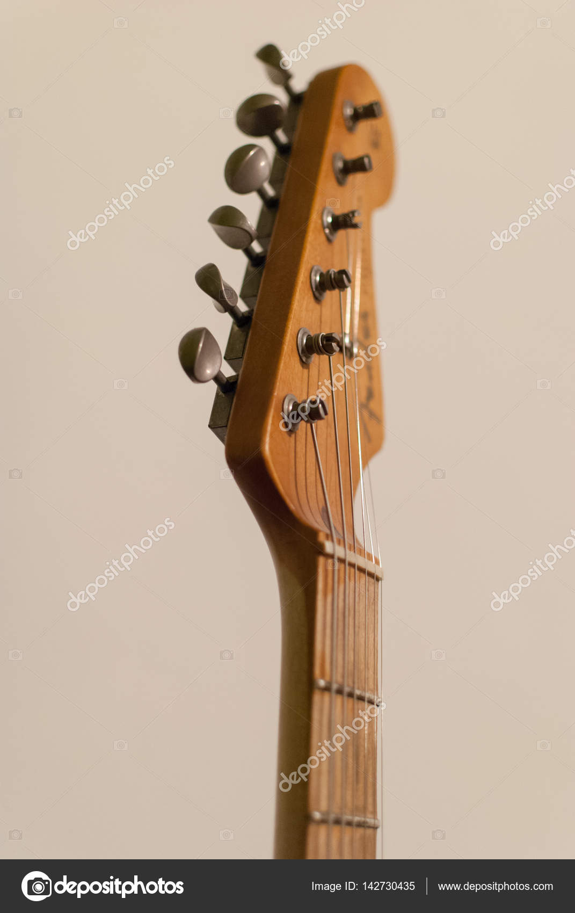
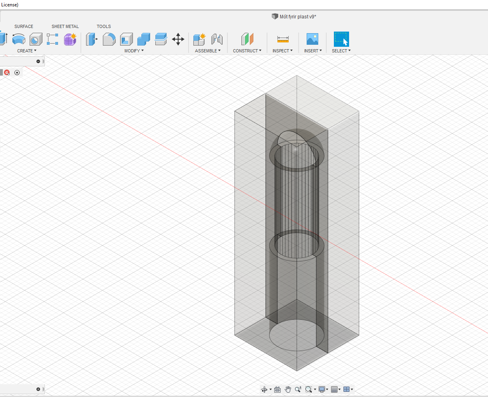
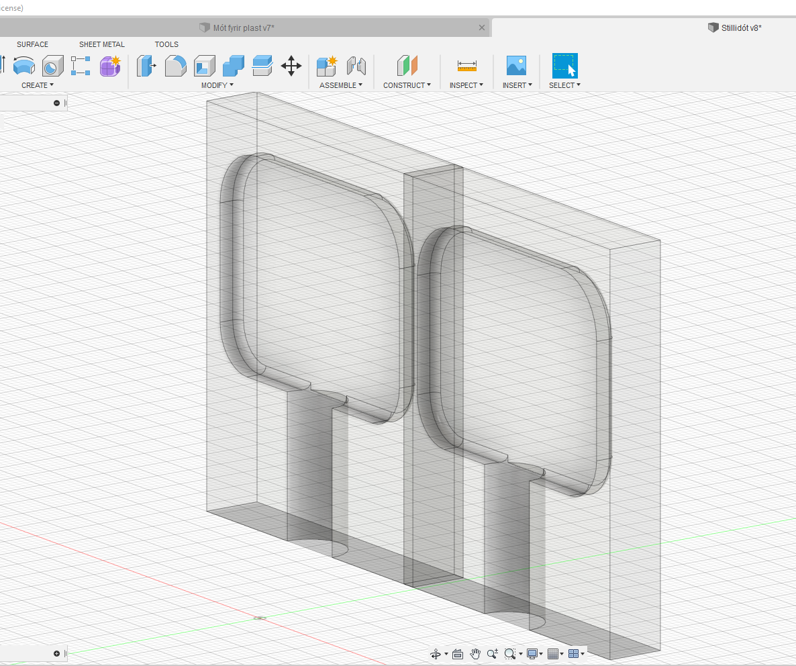
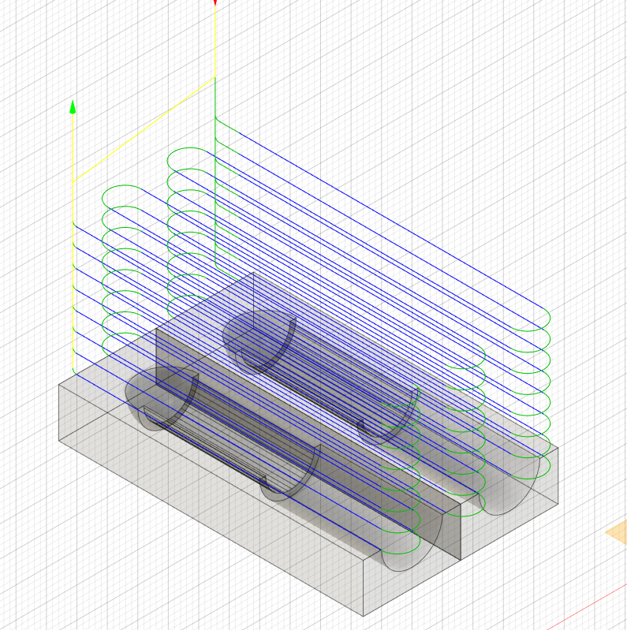
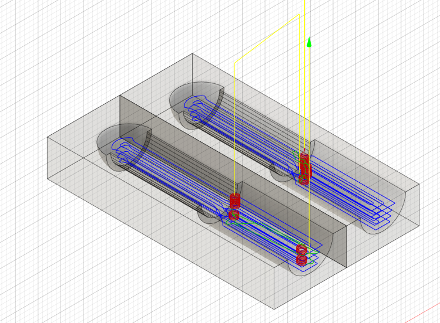
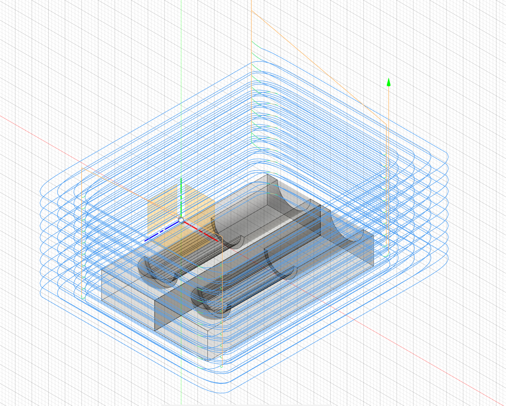
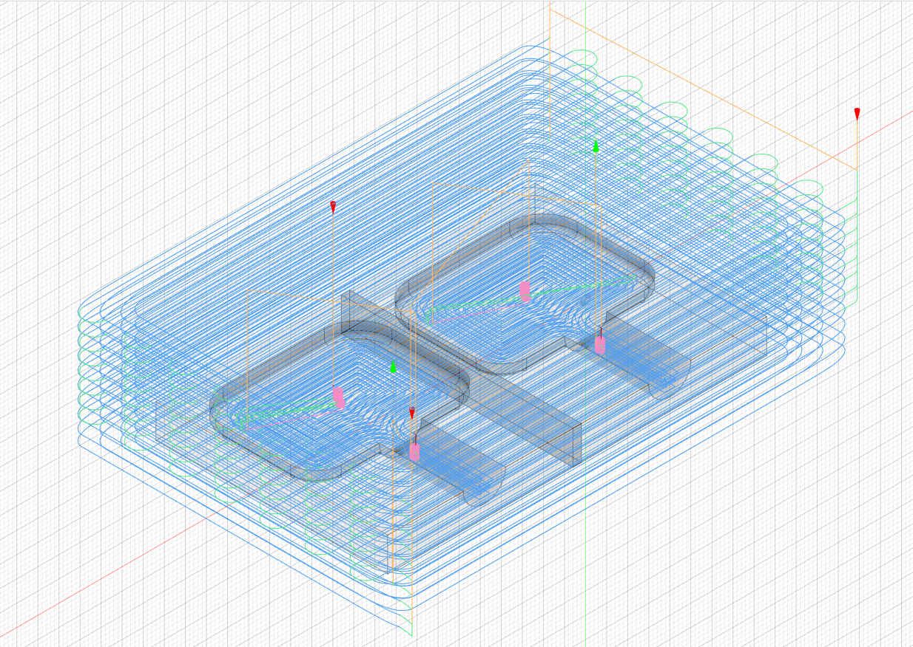

Að fræsa og undirbúa mót
 Þar sem stilliskrúfurnar á gítarhausnum eru frekar flókið form sem við hefðum ekki getað fræsað beint út úr efni ákváðum við að framleiða þá hluti með móti. Eins og sjá má eru þessar skrúfur oftast úr málmi en við ætlum okkur að framleiða þær úr vaxi sem steypt verður í mót. Við byrjuðum á að teikna hlutinn eins og hann átti að vera svo hann passaði á gítarinn okkar. Útfrá þeim teikningum búum við svo til mót sem við fræsum út og munum svo hella vaxi í mótið og það ætti að skila okkur þeim hlut sem við teiknuðum upphaflega. Mótið verður skorið út úr frauðplasti. Annars vegar þurfum við að búa til pinna sem heldur strengnum og hinsvegar skrúfu sem hægt er að nota til þess að stilla strenginn. Þar sem gítarinn okkar verður ekki nothæfur er virknin ekki eitthvað sem við þurfum að hafa áhyggju af hér, einungis útlitið. Hægt er að sjá framgang teikninganna í myndböndunum hér að neðan.
Vinnan er þó ekki búin hér heldur nú hefst vinnan við að búa til mótin sjálf. Til þess gerum við kassa utan um hlutina, splittum kassanum í tvennt, gerum svo combine á kassann og hlutinn sjálfan. Þá fáum við hol innan í kassan sem mótast af hlutnum sem við teiknuðum. Þá erum við kominn með 2 nýja componenta sem við notum sem mótið okkar. 
 Svo færum við hlutana tvo til og færum okkur yfir í manufacturing vinnusvæðið. Þar getum við búið til toolpathana sem við þurfum til þess að geta fræst mótin út. Mótin munu virka þannig að botninn á mótinu nær alveg niður að enda hlutanna sem við viljum framleiða. Með því að fræsa út tvo helminga getum við svo skrúfað þá saman og höfum þá gat á botninum þar sem við getum hellt í mótið. Svo getum við skrúfað mótið í sundur þegar vaxið hefur harðnað og náð í hlutinn okkar.
Nú hefjumst við þá handa við að búa til setup og finna viðeigandi toolpatha. Áður en við gerum setup búum við til kassa sem nær vel utan um mótið og hefur þykktina 30mm. Við notum þennan kassa svo sem stock í setup og þá er allt klárt fyrir toolpathana. Einnig pössum við að Z-ásinn sé réttur. Hann þarf að vera upp/niður í þá átt sem borinn getur ferðast upp/niður. Þetta gerum við fyrir báða hlutina í báðum skránnum.
Við byrjum á hlutnum sem heldur strengnum, skráin heitir Mót fyrir plast. Við byrjum á Face skurði og notum til þess 6mm flat end mill bor. Sá bor hefur 2 flautur. Þessi skurður tekur efni alveg að mótinu. Hér þarf að passa að borinn fjarlægi efnið í mörgum skrefinn. Við stillum skurðinn þannig að hann lækkar sig ekki um meira en 3mm í hverri umferð. þess vegna fáum við allar þessar umferðir að mótinu.

Næst notum við pocket skurð og notum þar 6.25mm ball end mill bor.

Síðasti skurðurinn losar mótið okkar úr efninu sem skorið er úr. Skurðurinn fer því allan hringinn og fjarlægir efnið í kringum mótið. Hér þarf aftur að passa að skurðurinn sé tekinn í nógu mörgum skrefum og við notum aftur sama flat end mill borinn og í fyrsta skurðinum. Við notum 2D adaptive skurð til þess að ná mótinu úr efninu.

Þá er undirbúningurinn fyrir annað mótið tilbúinn og við gerum það sama fyrir hitt mótið.
Við notum aftur sömu skurði í sömu röð með sömu bora. Þeir skurðir líta út svona þegar þeir eru allir settir saman.

Undir eðlilegum kringumstæðum hefði næsta skref verið að mæta uppí Fablab til þess að fræsa en ekki gafst tími til þess. Allur undirbúningur hefur þó verið gerður og hægt er að mæta exporta G kóða úr Fusion og skella þeim beint í ShopBot-inn. Skrárnar má nálgast hér að neðan.
Strengjahaldari
Stilliskrúfa